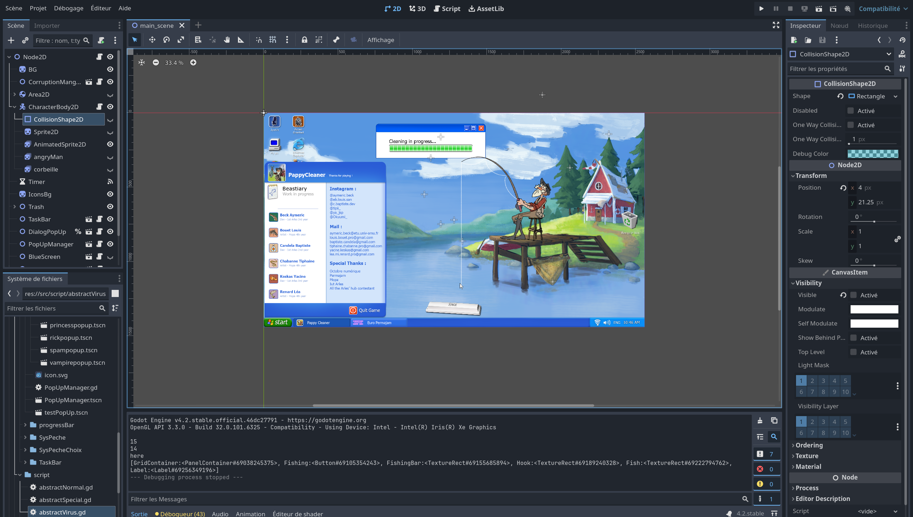
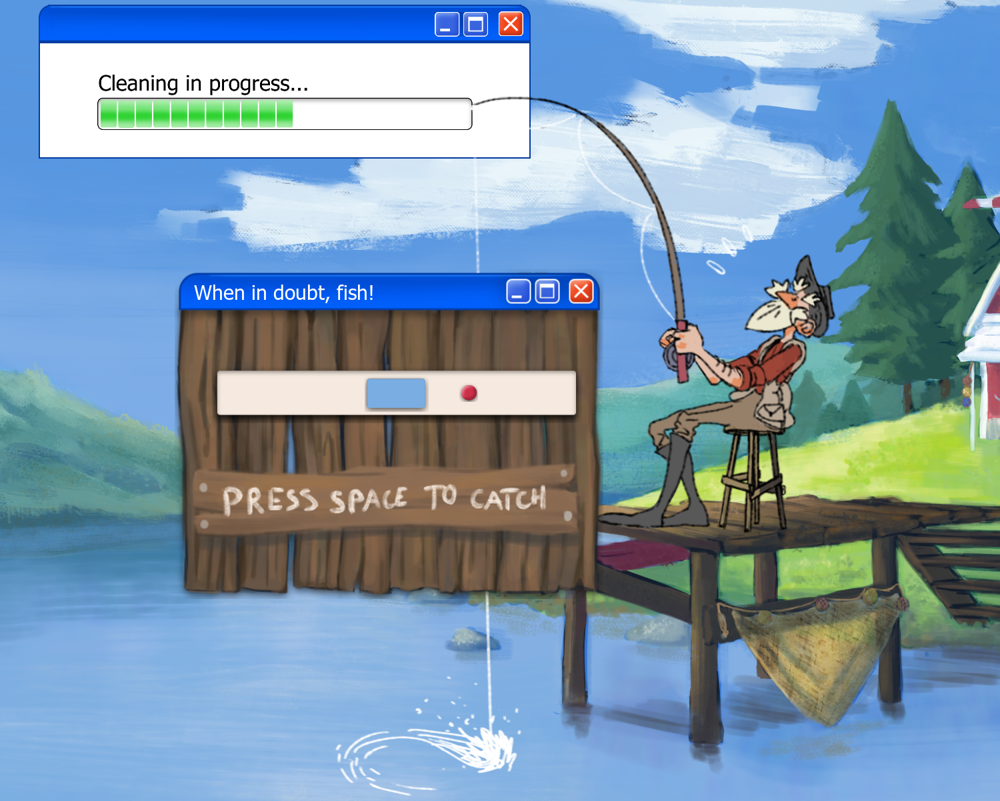

Projet 1 : Pepe Cleaner



Pepe cleaner est un jeu vidéo réalisé par une équipe de 6 personnes dans le cadre d'un hakathon. Dans ce groupe, nous étions 3 développeurs et 3 designers. Ce projet avait pour but de réalisé un jeu vidéo dans un temps imparti de 48h tout en respectant un thème imposé. Pour ce jeu, nous avons donc utilisé godot engine, un moteur de jeu open source. Ce projet nous a permis de mettre en pratique nos compétences en développement de jeu vidéo mais également de travailler en équipe avec des profils totalement différents.